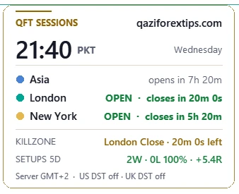

Why traders in Pakistan and India use QFT Killzones
Most session indicators were made for London or New York. Traders in Lahore, Karachi, Delhi or Mumbai still have to work out what "02:00 New York" means today, and get it wrong twice a year when the clocks change. QFT Sessions & Killzones does that work for you, then goes further: it shows you the actual ICT setups that formed in each killzone and how they ended, so you learn the model on your own pair and your own broker.
| Feature | Typical free session indicator | QFT Sessions & Killzones |
|---|---|---|
| Sessions shown in Pakistan / India time | Rare | Yes (PKT, IST, server or UTC) |
| US and UK daylight saving handled separately | Usually no | Yes, automatic |
| Broker server time detected | Manual | Automatic |
| Session range in pips | Sometimes | Yes, on every box |
| ICT killzones (Asia, London, NY, London Close) | Often missing | All four |
| Liquidity sweep → MSS setups marked | No | Yes, with entry, SL and target |
| Results: win rate and total R | No | Yes, on the panel |
| Light and dark chart themes | Rarely | Yes, automatic |
| Needs DLL or sign-up | Sometimes | No |
| Price | Often paid | Free |
Features
Every session drawn as a clean box with its high, low and range in pips, so you see at a glance which session moved the market.
Asian, London, New York and London Close killzones as a slim colour strip at the bottom of the chart. It stays in place while you scroll and zoom.
Inside each killzone the indicator finds the liquidity that was swept (session highs/lows and untaken swings), waits for a strong market structure shift and marks the entry, SL and target.
Minimum 1:2. If the sweep took a session's liquidity, the target is the other side of that same session; beyond it the move is ridden with a 3-candle trailing rule.
Every past setup shows WIN +3.4R, LOSS -1R or OPEN, and the panel adds up wins, losses, win rate and total R for the last days. Learn from facts, not opinions.
The same indicator, panel and setups for MetaTrader 5 and MetaTrader 4. Download the version for your platform.
The panel shows the time in Pakistan (PKT) or India (IST), which session is open, when it closes and which killzone is next. No more converting New York time in your head.
London and New York change their clocks on different dates. The indicator follows both, day by day, so old and new boxes are always at the right hour.
GMT+2/+3 brokers (most of them) are detected automatically. A fixed offset can be set for any other broker.
PDH and PDL lines with prices, the two levels most intraday traders watch for liquidity and reactions.
A clean QFT panel with rounded corners. It matches a dark or white chart automatically and stays sharp on high-resolution screens.
Hover over any box, line or setup to read what it is and why it matters. Students learn ICT concepts directly on their own chart.
Get an alert the moment a new killzone setup forms, with entry, SL and target, on MT5 and on your phone.
The live session clock
The panel sits in the top-left corner of the chart. It shows the time in Pakistan (PKT) or India (IST), which of Asia, London and New York is open, how long until it closes or opens, which killzone is running now or comes next, and the result of the recent setups: wins, losses, win rate and total R.
It follows your chart colours: dark panel on a dark chart, white panel on a white chart.

How the killzone setups work
The indicator follows the classic ICT idea: in a killzone, price first runs the stop losses resting above or below an obvious level, then turns. It only marks a setup when all four steps happen, and only on closed candles.
- Liquidity. A level where stop losses sit: the high or low of the Asia, London or New York session, or a swing high/low that no candle has broken yet.
- Sweep. A candle inside a killzone wicks beyond that level and closes back inside: the stop hunt.
- MSS (market structure shift). Within a few candles, a strong candle closes through the last swing on the other side. The trap is confirmed and the direction has changed.
- Entry, SL and target. Entry at the close of the MSS candle, stop loss beyond the sweep. The target is at least 1:2; if the sweep took a session's liquidity, the target is the other side of that session.
How each result is counted
- Stop loss hit before 1:2 → LOSS -1R.
- 1:2 reached, but price comes back to the entry before the target → WIN +2R.
- Target reached (for example the Asia high) → WIN with that target's full R.
- Price runs beyond the target → the move is followed until a candle closes back beyond the last 3 candles, and the whole move is counted.
Each setup is drawn like a position tool: green from entry to target, red from entry to stop loss, with one clear label such as BUY WIN +3.4R. Hover over it to see the entry, stop loss, target and which liquidity was swept.
ICT killzones and sessions in Pakistan and India time
| Session / killzone | PKT winter (Nov – Mar) | PKT summer (Mar – Oct) | IST winter |
|---|---|---|---|
| Asia session (Tokyo) | 05:00 – 14:00 | 05:00 – 14:00 | 05:30 – 14:30 |
| London session | 13:00 – 22:00 | 12:00 – 21:00 | 13:30 – 22:30 |
| New York session | 18:00 – 03:00 | 17:00 – 02:00 | 18:30 – 03:30 |
| Asian killzone | 06:00 – 10:00 | 05:00 – 09:00 | 06:30 – 10:30 |
| London killzone | 12:00 – 15:00 | 11:00 – 14:00 | 12:30 – 15:30 |
| New York killzone | 17:00 – 20:00 | 16:00 – 19:00 | 17:30 – 20:30 |
| London Close killzone | 20:00 – 22:00 | 19:00 – 21:00 | 20:30 – 22:30 |
For a few weeks in March and in late October / early November, London and New York are on different clocks, so these times shift by an hour for some sessions. The indicator follows the exact dates every year. More in our forex trading sessions guide.
Install in 2 minutes
- Download the free zip for your platform (MT5 or MT4) and unzip it (right-click → Extract All).
- In MetaTrader open File → Open Data Folder, then go to MQL5 → Indicators (MT5) or MQL4 → Indicators (MT4).
- Copy QFT_Sessions_Killzones.ex5 (MT5) or QFT_Sessions_Killzones.ex4 (MT4) into that folder.
- Back in MetaTrader, right-click Indicators in the Navigator and choose Refresh.
- Drag QFT_Sessions_Killzones onto a chart (M5 or M15 is best for setups) and press OK. No DLL or extra permission is needed.
Free download, version 1.53, for MT5 and MT4. Each zip contains the indicator (.ex5 or .ex4) and the Install Guide & Features PDF. Read the guide first: MT5 PDF · MT4 PDF.
Main settings
| Clock time zone | Pakistan (PKT), India (IST), broker server time or UTC. |
| Broker server time zone | Auto detect is right for most brokers; choose Fixed for unusual ones. |
| Days to show / Days of setups | How many days of session boxes and of setups to draw. |
| Setups in London / New York / London Close / Asian KZ | Switch each killzone's setups on or off. |
| Minimum reward : risk | Default 1:2. The target is never closer than this. |
| Stop loss buffer | Extra room beyond the sweep, as a part of ATR, so it suits Gold, forex and indices alike. |
| MSS candle body | How strong the breaking candle must be (part of ATR). Higher = fewer but cleaner setups. |
| Draw labels on top of candles | Keeps every label readable; your chart setting comes back when you remove the indicator. |
Khulasa (Roman Urdu / Hindi)
- Bilkul free MT5 indicator: Asia, London aur New York sessions ke boxes, har session ki range pips mein.
- ICT killzones (Asian, London, New York, London Close) chart ke neeche rangeen patti mein.
- Panel mein Pakistan (PKT) ya India (IST) ka waqt, kaunsa session khula hai aur kab band hoga.
- DST (garmi/sardi ka waqt) khud badalta hai, broker ka server time bhi khud pehchanta hai.
- Killzone mein liquidity sweep → MSS setup khud mark: entry, SL, target aur natija (WIN / LOSS).
- Panel mein pichhle dino ka hisaab: wins, losses, win rate aur total R.
Questions
Is the QFT killzones indicator really free?
Yes. QFT Sessions & Killzones is 100% free to download and use, with no trial, no sign-up and no licence key. It is part of the free tools of Qazi Forex Tips.
What is the best killzone indicator for MT5?
Look for one that shows sessions in your own time zone, follows daylight saving, marks all four ICT killzones and shows real setups with results. QFT Sessions & Killzones does all of that for free, and it is made for traders in Pakistan and India.
What are the ICT killzones in Pakistan time?
In winter (November to March): Asian 06:00–10:00, London 12:00–15:00, New York 17:00–20:00 and London Close 20:00–22:00 PKT. In summer each one starts one hour earlier. The indicator switches automatically.
Does it work for Gold (XAUUSD)?
Yes. It works on Gold, all forex pairs, indices such as US30 and NAS100, and crypto. The stop loss buffer uses ATR, so it adapts to each market.
Does the indicator repaint?
No. Setups are only marked on closed candles, and once a setup is marked its entry, stop loss and target do not change.
Does it place trades for me?
No. It is an indicator: it draws on the chart and sends alerts. You decide and place every trade yourself.
Which timeframe is best?
Session boxes work from M1 to H1. Setups are marked on M1 to M30; M5 and M15 give the clearest killzone setups.
Is there an MT4 version?
Yes. QFT Sessions & Killzones is free for both MetaTrader 5 and MetaTrader 4, with the same sessions, killzones, setups and panel. Download the MT4 zip and put the .ex4 file in MQL4 → Indicators.
Why do the session times change in March and November?
London and New York move their clocks for daylight saving on different dates. The indicator follows the exact dates for each year, so the boxes are always correct in PKT and IST.
Learn the concepts behind it
- Forex trading sessions in Pakistan time
- Liquidity in forex: where stop losses sit
- BOS vs CHoCH: market structure shift explained
- Smart Money Concepts (SMC) guide
- Fair value gap (FVG)
- Free FVG indicator for MT5 & MT4 (QFT FVG Pro)
- Best time to trade forex and Gold (video lesson)
Education only, not financial advice. Setups and results marked by the indicator are drawn from past price data to help you learn the model; they do not guarantee future results. Trading forex, Gold and CFDs carries a high risk of loss. Read our Risk Disclaimer.